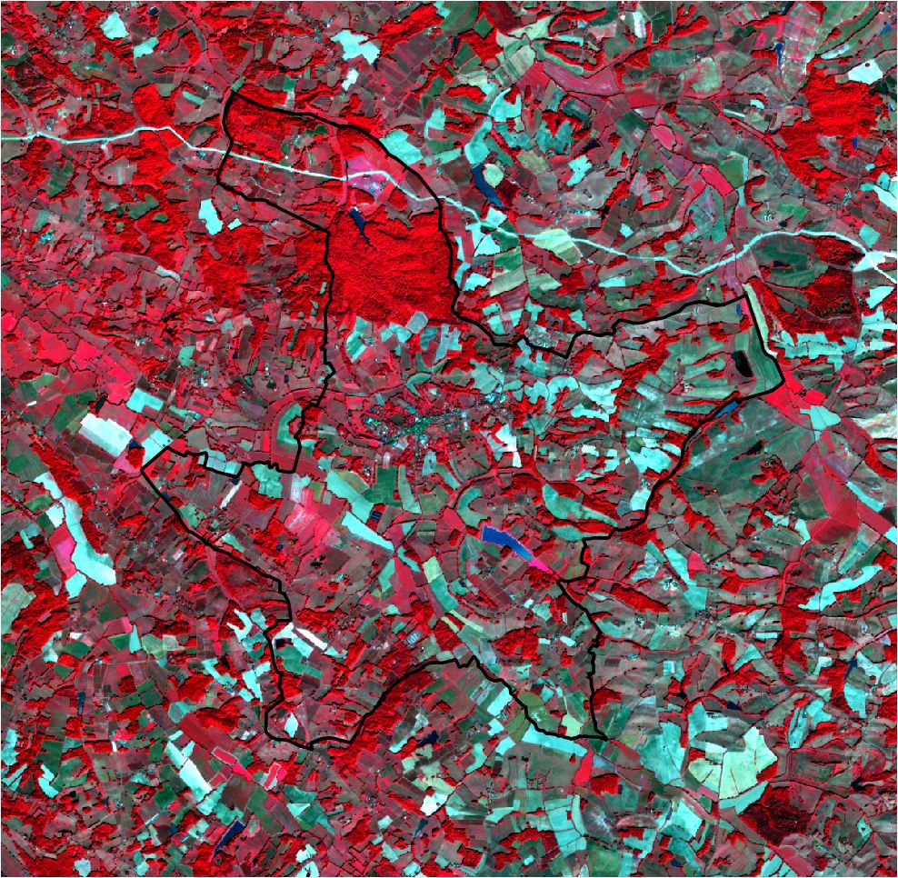

radioindice
radioindice (or ri) subcommand computes radiometric indices such as ndvi or ndwi.
$ rastertools radioindice --help
usage: rastertools radioindice [-h] [-o OUTPUT] [-m] [-r ROI]
[-i INDICES [INDICES ...]] [--ndvi] [--tndvi]
[--rvi] [--pvi] [--savi] [--tsavi] [--msavi]
[--msavi2] [--ipvi] [--evi] [--ndwi] [--ndwi2]
[--mndwi] [--ndpi] [--ndti] [--ndbi] [--ri]
[--bi] [--bi2] [-nd band1 band2]
[-ws WINDOW_SIZE]
inputs [inputs ...]
Compute the requested radio indices on raster data.
This command computes various vegetation and environmental indices on
satellite or raster data based on the provided input images and options. The
tool can compute specific indices, merge the results into one image, compute
normalized differences between bands, and apply processing using a region of
interest (ROI) and specified tile/window size.
Arguments:
inputs TEXT
Input file to process (e.g. Sentinel2 L2A MAJA from THEIA). You can
provide a single file with extension ".lst" (e.g. "radioindice.lst")
that lists the input files to process (one input file per line in .lst).
Options:
-o, --output TEXT Output directory to store results (by
default current directory)
-m, --merge Merge all indices in the same image (i.e.
one band per indice)
-r, --roi TEXT Region of interest in the input image
(vector)
-ws, --window_size INTEGER Size of tiles to distribute processing,
default: 1024
-i, --indices TEXT List of indices to compute. Possible indices
are: bi, bi2, evi, ipvi, mndwi, msavi,
msavi2, ndbi, ndpi, ndti, ndvi, ndwi, ndwi2,
pvi, ri, rvi, savi, tndvi, tsavi
--bi2 Compute bi2 indice
--bi Compute bi indice
--ri Compute ri indice
--ndbi Compute ndbi indice
--ndti Compute ndti indice
--ndpi Compute ndpi indice
--mndwi Compute mndwi indice
--ndwi2 Compute ndwi2 indice
--ndwi Compute ndwi indice
--evi Compute evi indice
--ipvi Compute ipvi indice
--msavi2 Compute msavi2 indice
--msavi Compute msavi indice
--tsavi Compute tsavi indice
--savi Compute savi indice
--pvi Compute pvi indice
--rvi Compute rvi indice
--tndvi Compute tndvi indice
--ndvi Compute ndvi indice
-nd, --normalized_difference band1 band2
Compute the normalized difference of two
bands defineda s parameter of this option,
e.g. "-nd red nir" will compute (red-
nir)/(red+nir). See
eolab.rastertools.product.rastertype.
BandChannel for the list of
bands names. Several nd options can be set
to compute several normalized differences.
-h, --help Show this message and exit.
If no indice option is explicitly set, NDVI, NDWI and NDWI2 are computed.
Warning
radioindice only accepts input files that match one of the configured raster types, either a built-in raster type
or a custom raster type defined with option -t of rastertools. See section “Raster types”.
Examples :
The first command computes the NDVI of a Sentinel-2 L2A product. The computation is performed on a region of interest defined by a shapefile. The NDVI is then computed on a subset of the input product.
Let’s have a look of the Sentinel-2 L2A product in false color (Green, Red, NIR). The region of interest is highlighted with a black line.
$ rastertools radioindice -r "./COMMUNE_32001.shp" --ndvi ./SENTINEL2A_20180521-105702-711_L2A_T30TYP_D.zip
The generated NDVI image is:

The second command computes two indices (NDVI and NDWI) of the same input image. No region of interest is configured.
$ rastertools radioindice -i ndvi ndwi -m ./SENTINEL2A_20180521-105702-711_L2A_T30TYP_D.zip
The generated image has two bands (because option -m is activated): first one is the ndvi, second one is the ndwi. If -m option is not activated, two images would be generated, one image per indice.
Here is a capture of the first band (ndvi):